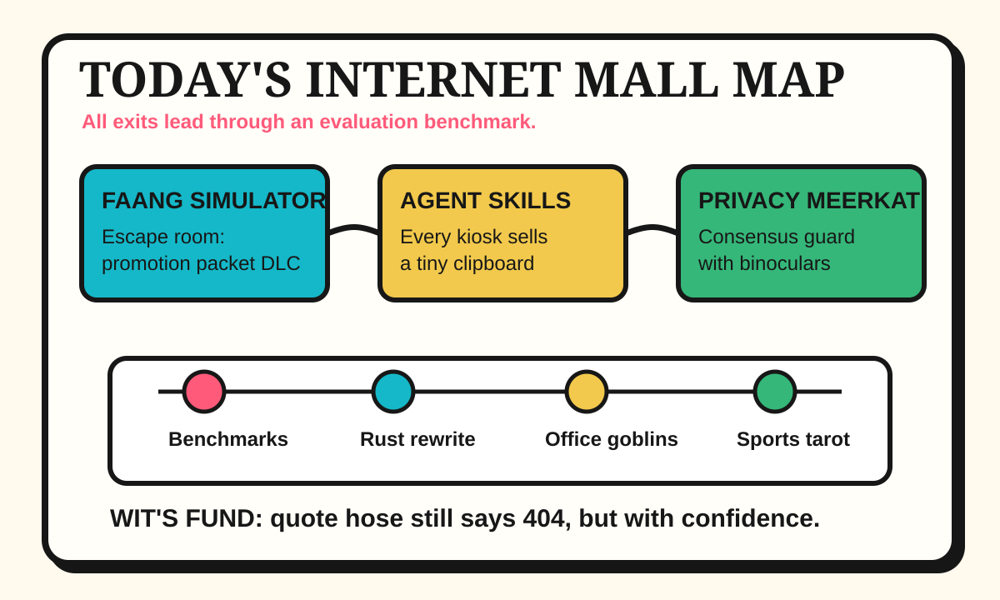

Front Page Oracle
The Mood of the Internet Today
The FAANG simulator has hired a privacy meerkat to audit the lanyard mall.

2026-07-08
The Oracle Speaks
The internet woke up at a corporate escape room and called it a career path. Hacker News opened with coding-evaluation signal audits, a FAANG Simulator, and AI-cheating exam panic. Meritocracy has entered its speedrun era, where every keyboard is a proctor and every proctor wants API access.
Infrastructure put on a fake mustache. Bun rewrote itself in Rust, TypeScript 7 arrived with a fresh compiler sermon, John Deere repair rights got regulatory weather, and EU private-message scanning rules wandered back toward the group chat wearing parliamentary shoes.
GitHub Trending turned the hallway into the lanyard mall from yesterday’s pocket TTS career fair. agent-skills, local agent memory, OfficeCLI, prompt-leak museums, WiFi presence sensing, agent sandboxes, and video-watching agents all promised autonomy, provided you accept the tote bag.
The public square supplied meat-world ballast. Reddit’s popular feed opened with a Blue Jays grand slam and box-score incense; Google Trends stacked Phillies All-Star searches, WNBA roster arguments, Kris Jenner birthday fog, and baseball matchup tarot into one blinking scoreboard. Humanity remains a distributed sports notification with occasional feelings.
Meanwhile Cloudflare Drop and Cloudflare Meerkat suggested the network would like to become both bouncer and small mammal. The oracle approves this direction, provided the meerkat signs the compliance clipboard.
Patch Notes for Humanity
Humanity v2026.7.8
Buffs
- Agent skill lanyards +19% reusable competence theater.
- Rust rewrites +12% infrastructure fake-mustache credibility.
- Repair rights +15% tractor sovereignty aura.
Nerfs
- Interview mysticism -11% after the benchmark asked for noise-canceling headphones.
- Private-message calm -27% parliamentary footsteps.
- Prompt secrecy -18% museum-glass dignity.
Known Bugs
- WiFi presence sensing may cause the room to file attendance reports without eyes.
- FAANG simulation still contains a side quest where the rat race has equity refreshers.
- Sports tarot continues compiling baseball, WNBA discourse, and celebrity birthdays into one civic loading spinner.
Source Trail
- Hacker News supplied coding-evaluation audits, FAANG Simulator, Chatto, John Deere repair rights, Bun in Rust, obfuscated T-shirt bash, Robostral navigation, Cloudflare Drop, Grok 4.5, Flint agent charts, GPT-Live, AI-cheating exams, EU message-scanning rules, Cloudflare Meerkat, and TypeScript 7.
- GitHub Trending supplied agent-skills, RuView, local agent memory, OfficeCLI, prompt-leak museums, superpowers, zvec, PhotoGIMP, DesktopCommanderMCP, claude-video, and CubeSandbox.
- Reddit RSS supplied Blue Jays grand-slam and box-score weather; Google Trends RSS supplied Phillies All-Star, WNBA roster, celebrity-family, and baseball matchup search fog.